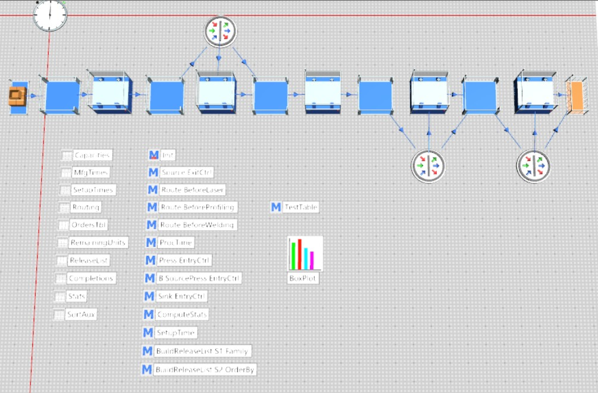
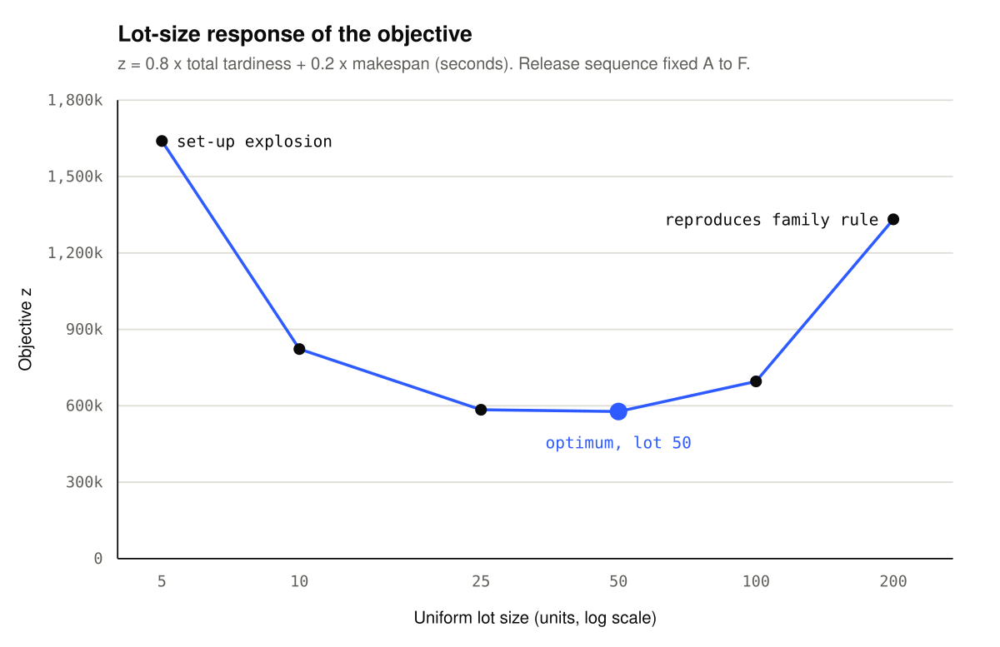
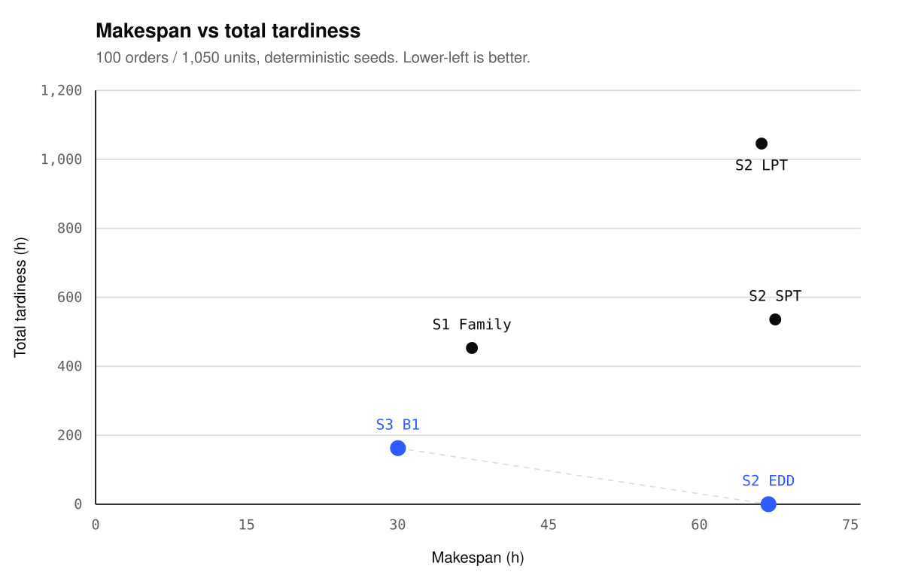

Work / P.02 · Case study
Production Scheduling & Lot-Sizing Study
Five order-release strategies on one deterministic demand realisation. The simplest rule won the objective outright — and the search that beat it on throughput lost on delivery reliability.
- Context
- Simulation Modeling in Logistics Planning — M.Sc. Systems Engineering for Manufacturing, OVGU Magdeburg
- Date
- Summer Semester 2026
- Team
- Individual assignment — conceptual model, simulation model, experiments and report
- Tools
- Tecnomatix Plant Simulation 2404 · SimTalk · random-key encoding
The requirement
A medium-sized manufacturer of OEM parts wants to raise delivery reliability — the share of customer orders completed on or before the customer-required completion time. That is the requirement the study has to answer, and it is deliberately not the same thing as throughput.
The line makes six product types (A–F) across five stages — Press → Laser → Bending → Profiling → Welding — with product-specific skip routings: A and F skip Laser, B and E skip Welding, D skips Profiling, C visits all five. Buffers between stages are uncapacitated, so no stage ever blocks its upstream neighbour. Set-up time is product-dependent and is triggered whenever a machine sees a different product type than the unit it just processed.
Demand is 100 customer orders generated at simulation start: 1–6 distinct product types per order, 1–5 units of each, and a required completion time uniform between 4 hours and 4 days. Every strategy was run against the same fixed-seed realisation, so the comparison is like-for-like rather than a sampling artefact.
What the hand calculation settled before any run
The conceptual model was written and closed out before the simulation was built, which is what makes the simulation auditable afterwards. Expected demand follows from the order-generation rules: a given product appears in an order with probability 7/12 and averages 3 units when present, so 1.75 units per order per product → 175 units per product → 1,050 units across the six types. The realised seeds produced exactly 1,050.
Stage workload at that demand identifies the constraint, and it is worth being precise about which stage that is:
| Stage | Machines | Total work (s) | Load / machine |
|---|---|---|---|
| Press | 3 | 228,725 | 21.18 h |
| Laser | 3 | 156,275 | 14.47 h |
| Bending | 3 | 264,075 | 24.45 h |
| Profiling | 2 | 163,275 | 22.68 h |
| Welding | 3 | 112,700 | 10.44 h |
Adding the family rule's set-up overhead at Bending (1,715 s — only 1.95% of that stage's processing load, which is exactly the point of family production) gives a deterministic lower-bound makespan of 89,740 s ≈ 24.93 h, and a predicted realistic band of 26–32 h. Due dates are uniform on [4, 96] h, so roughly 22% of orders have a deadline inside 24 h and are near-certain to miss it — an on-time ceiling of about 78%.
Approach
The model was built in Plant Simulation 2404 and validated incrementally — frame and tables, order generation in Init, skip routing, processing and set-up times with ±10% triangular noise, then sink-side KPI collection — each step checked before the next was added. Each stage is a ParallelProc with its machine count; routing uses per-product skip lists held in table files; set-up fires from a triangular distribution when the product type changes on a machine. A Sink_EntryCtrl method writes completions and tracks makespan, total tardiness and on-time count incrementally.
Only the release-list builder changes between strategies, which keeps the comparison honest:
- S1 — family rule (the baseline). All units of A across all 100 orders, then all of B, and so on. Five product transitions per machine for the whole run.
- S2 — priority rules. Every customer order released as its own manufacturing order, sorted by Earliest Due Date, Shortest Processing Time or Longest Processing Time.
- S3 — lot-based search. Lot size and release sequence as decision variables, minimising z = 0.8 × total tardiness + 0.2 × makespan.
The S3 chromosome is a 12-tuple: six integer lot sizes (1–200) and six real-valued sequence keys decoded by the random-key technique (Bean 1994), so every chromosome decodes to a valid permutation without repair operators. The decoder cycles the permutation, releasing one lot of min(lotSize[P], remaining demand) per visit until demand is exhausted — always producing a feasible 1,050-row release list that respects per-order composition.

Result
All figures below are simulation output from fixed seeds — re-running any submitted model reproduces them to the last decimal. z is the weighted objective in seconds.
| Strategy | Makespan (h) | Tardiness (h) | On-time | z = 0.8T + 0.2M |
|---|---|---|---|---|
| S1 Family | 37.39 | 453.23 | 67 / 100 | 1,332,235 |
| S2 EDD | 66.85 | 0.00 | 100 / 100 | 48,131 |
| S2 SPT | 67.53 | 535.89 | 75 / 100 | 1,591,990 |
| S2 LPT | 66.17 | 1,045.88 | 61 / 100 | 3,059,768 |
| S3 B1 (best found) | 30.04 | 162.87 | 80 / 100 | 490,694 |
Three things fall out of that table, and only the first one is obvious.
Per-order release costs about 30 hours of makespan, whichever priority key you use. All three S2 rules inflate makespan by roughly 79% over the family rule. Under S1 each machine sees five product transitions for the entire 1,050-unit batch; under per-order release almost every order ends one product family and begins another, so the line absorbs on the order of 100 extra inter-order transitions per machine. Makespan is dominated by the number of set-ups, not by their sequence — which is why the priority key barely moves it.
EDD wins the objective by an order of magnitude, and it is the simplest rule tested. Zero tardiness, 100 on-time, worst-scheduled order still finishing four hours inside its deadline. Multiplied by the 0.8 tardiness weight, that gives z = 48,131 against the best lot-based run's 490,694. SPT shows the textbook pathology instead — good average, terrible tail: it clears small orders fast and pushes large ones to the end of the run, where the worst finishes 52.7 h late, nearly twice S1's worst case. LPT ignores due dates altogether and is worst on every customer-facing metric; it is a load-balancing rule, not a delivery-reliability rule.
The lot-based search dominates the baseline on everything — makespan −20%, tardiness −64%, on-time +13 ppt, z −63% — and posts the lowest makespan of any strategy at 30.04 h, less than half of EDD's. It just cannot compete on the tardiness-weighted objective, because any lot-based release keeps some orders waiting for their constituent products while EDD prioritises each order individually.


Sequence turned out to be a second, independent axis: at a fixed lot size of 50, reverse-alphabetical release (F→A) beat alphabetical by 15% on z, almost entirely through lower tardiness. Phase C then tested the hypothesis that the bottleneck-skipping product D could absorb larger lots to relieve Profiling. It was refuted. D's long lot idles Profiling while the other five products wait, more than offsetting the local set-up saving. The winning chromosome is the plain one: every lot 50, sequence F→E→D→C→B→A.
Re-weighting the objective does not rescue anything. Because EDD's tardiness is zero, its z scales purely with the makespan weight — it is only displaced once that weight passes roughly 0.82, which is not a realistic weighting for a company whose stated goal is delivery reliability. Re-weighting can trade reliability against makespan; it cannot manufacture more reliability than EDD already delivers.
What I'd do differently
- Call the search what it is. The Plant Simulation 2404 GAOptimization toolkit replaced the older wizard, and configuring it for a custom 12-gene fitness loop inside the deadline was not realistic — so what I ran is a structured grid sweep with deterministic best-so-far selection, not a generational GA. Eleven evaluations cannot cover a 12-dimensional space; z = 490,694 is almost certainly a local optimum, and a real generational GA on the same encoding would likely improve it 5–15%.
- My pre-simulation band was wrong, and I'd want to know why. The hand calculation predicted 26–32 h for the baseline; the simulation returned 37.39 h. The lower bound (24.93 h) held, but my allowance for pipeline fill, drain and non-bottleneck idling was too small. The fix is not a wider band — it is a fill/drain term derived from the routing rather than guessed.
- One demand realisation is one data point. Fixed seeds make the comparison clean and reproducible, but every KPI here is a single sample. Replications across seeds would give confidence intervals and show whether the S3-vs-EDD ordering is robust or an artefact of this particular set of 100 orders.
- The objective measures the wrong thing for the stated goal. z minimises tardiness in seconds, so it punishes one very late order harder than many slightly late ones, and never directly rewards the count of on-time orders. EDD wins both here only because zero tardiness implies 100% on-time — the alignment is incidental. If delivery reliability is the goal, on-time percentage belongs in the objective.